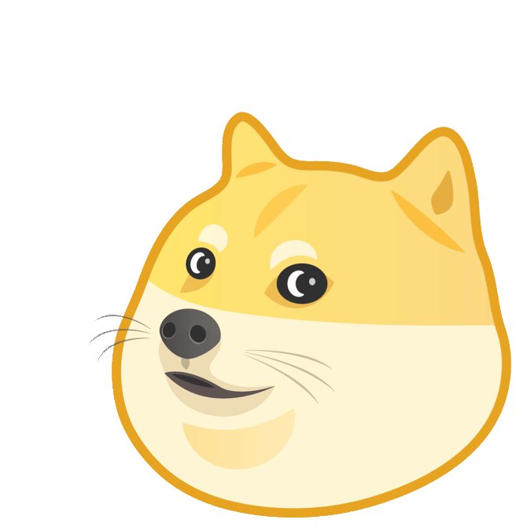

Welcome to EXPRA!¶
This is the course book for EXPRA - Group 6 for the Winter Semester 2021-2022 at Goethe University.
{kind=link}
About this course¶
This course is designed to provide you with an introduction to the theory and practice of scientific research. Its primary goals are to:
Teach you the basics of designing, conducting, and communicating psychological research according to Open Science principles
Give you the opportunity to do hands-on research by realizing a project from start to finish
Guide you in learning to use data science to analyze, interpret and present results, and
Introduce you to some broader concepts that will serve as essential tools in your scientific toolkit.
In this module, we will cover some experimental methods used in various areas of cognitive psychology as well as “comparative cognition,” i.e. animal cognition research. We will consider the philosophical grounding of these various methodological principles, as well as their implications for “real world” issues.
Moreover, in this module, you will be encouraged to look at science with a wide-angle lens. (The boundaries of departments are entirely made up!)
Note: In this module, you will have the opportunity to conduct an experiment either with human subjects on a topic within auditory cognition or with animal subjects (the neotropical bat Carollia perspicillata).
About this course book¶
This jupyter book will house all important information about this course, including course materials, pratical resources, and our class schedule.
You can navigate through the sections via the Table of Contents on the left side and within sections via the Contents on the right side of the page.
The three symbols in the top allow to enable full screen mode, link to the underlying Github repository and allow you to download the contents as a pdf or jupyter notebook respectively.
EXPRA¶
You can use the following sections to navigate through the content of the course:
Software Setup: Hardware & software requirements for this course.
Lectures & Workshops: Slides and other material mostly presented in Module I.
Open Science: Resources for carrying out your experiments in an open, transparent, and reproducible manner.
Demonstration Experiment: Resources for following along with and writing your demo reports.
Projects: Resources for each project.
Experimentation: Resources for Module II.
Project Finalization: Resources for Module III.
See you there!